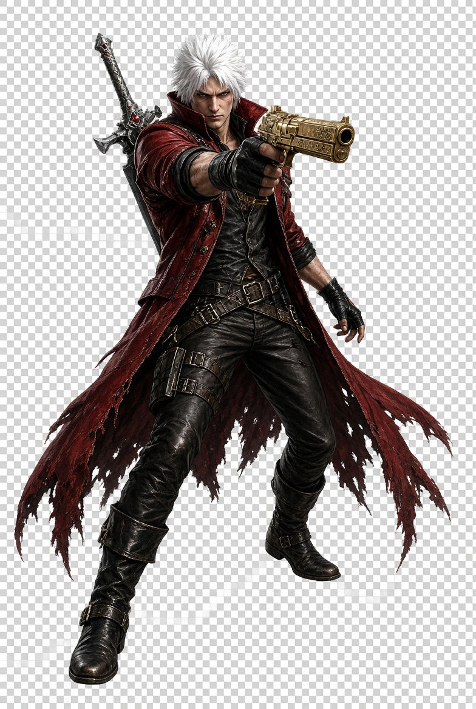
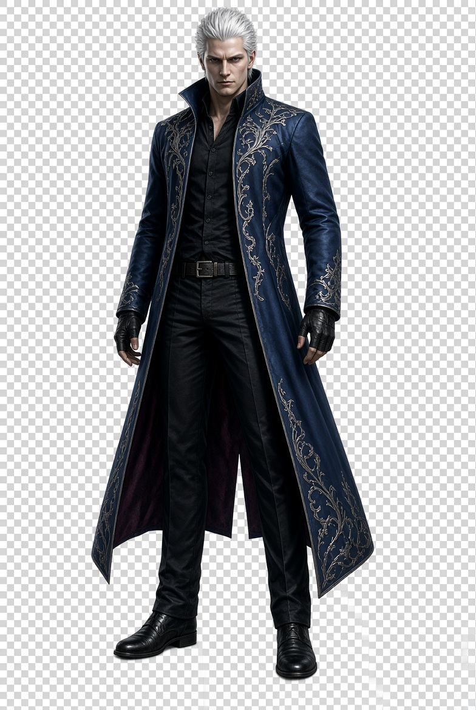
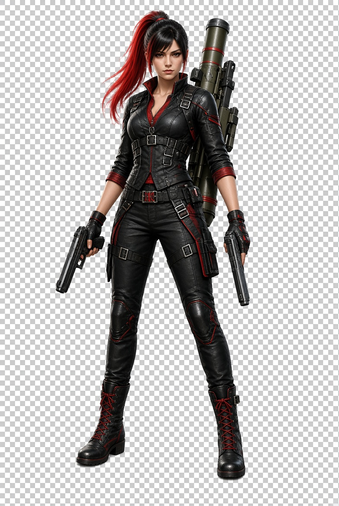
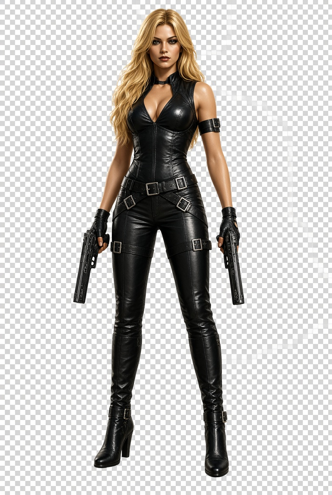
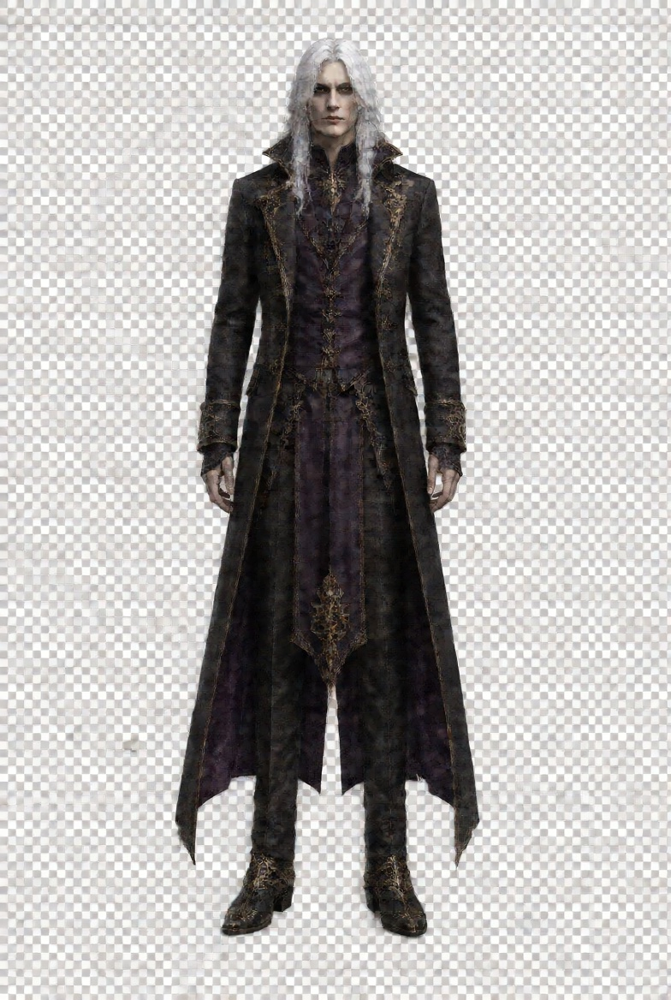
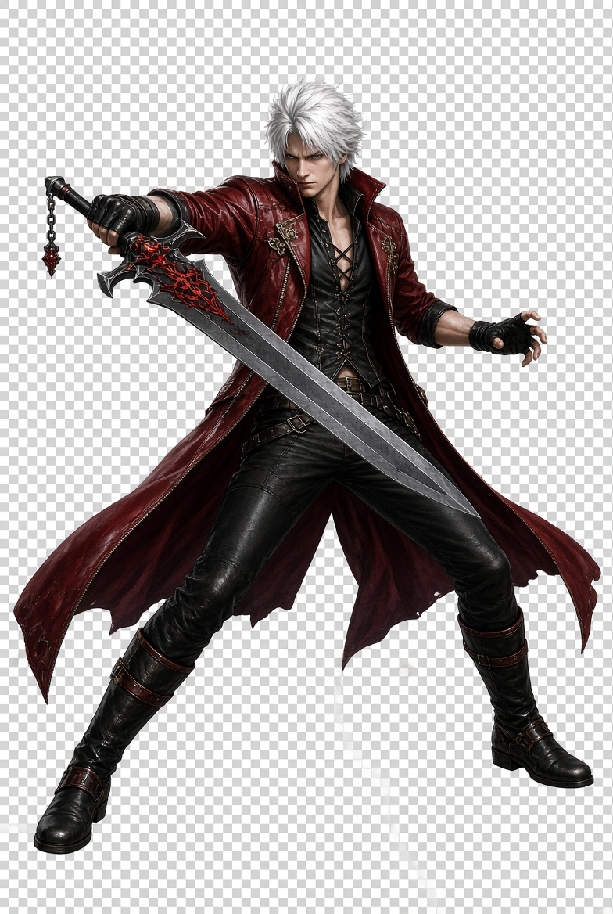

El origen de una leyenda
DEVIL
MAY CRY 3
Dante's Awakening
Antes de convertirse en leyenda, Dante tuvo que abrirse paso entre demonios… y su propio pasado.
El comienzo
Una familia.
Dos destinos.
Una torre misteriosa se alza en el horizonte y atrae fuerzas oscuras. Dante, joven cazador de demonios, acepta el desafío de su hermano gemelo Vergil. En el camino, alianzas inesperadas y viejas heridas pondrán a prueba su fuerza.
Una historia de rivalidad y elección que dio forma al cazador que el mundo llegaría a conocer.
Rostros del destino
Personajes icónicos
Héroes, rivales y aliados.
Cada uno tiene sus propias reglas.
D
01 / CAZADOR
Dante
Mitad humano, mitad demonio. Su humor despreocupado esconde un poder extraordinario.

V02 / RIVAL
Vergil
El hermano gemelo de Dante. Persigue el poder con una voluntad inquebrantable.

L03 / CAZADORA
Lady
Una cazadora humana decidida a ajustar cuentas con el pasado de su familia.

T04 / ALIADA
Trish
Una figura enigmática con poderes demoníacos y una presencia imposible de ignorar.

A05 / MISTERIO
Arkham
Un hombre consumido por la ambición, dispuesto a desatar fuerzas antiguas.
Domina tu forma de luchar
Elige tu estilo
Cuatro maneras de convertir
cada combate en espectáculo.

DOMINIO DE LA ESPADAESTILO 01 / OFENSIVA
Swordmaster
Amplía el repertorio de movimientos con armas cuerpo a cuerpo. Cada golpe abre nuevas posibilidades para mantener el ritmo.
01 / 04
Herramientas del oficio
Un arsenal legendario
Acero, fuego y hielo.
Elige cómo contar la historia.
Rebellion
La espada heredada de Dante. El corazón de su arsenal.
01Ebony & Ivory
Dos pistolas gemelas. Ritmo constante, estilo impecable.
02Cerberus
Nunchaku congelados que castigan a corta distancia.
03Agni & Rudra
Espadas gemelas con voces propias y ataques combinados.
04Nevan
Música eléctrica convertida en una tormenta de murciélagos.
05Ecos de la aventura
Galería visual
Un mundo al borde del abismo.
La leyenda apenas comienza.